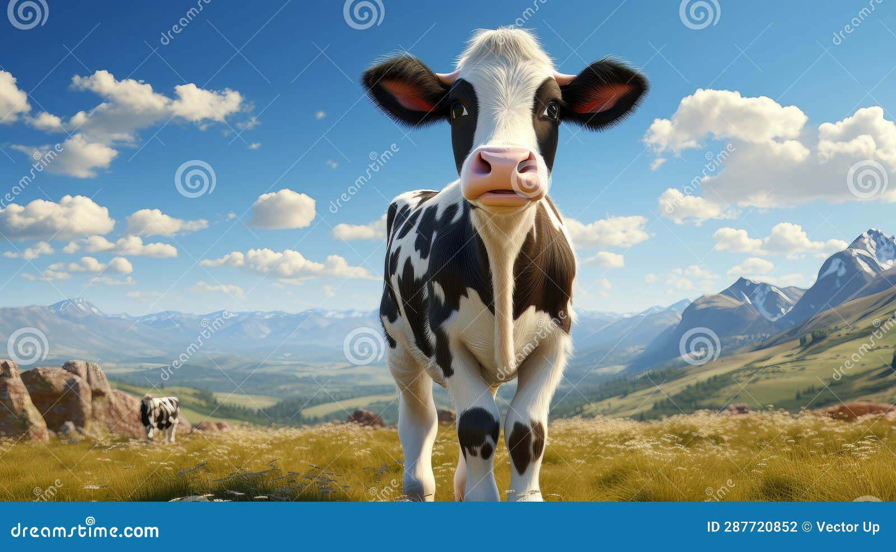
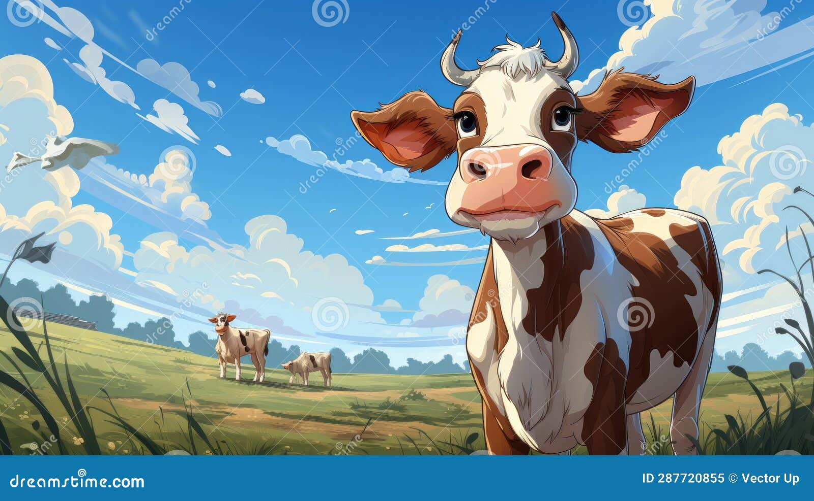

Introduction
A cow is a domestic animal. Cows are one of the most innocent animals who are very harmless. People keep cows at their homes for various benefits. Cows are four-footed and have a large body. It has two horns, two eyes plus two ears and one nose and a mouth. Cows are herbivorous animals. They have a lot of uses to mankind. In fact, farmers and people keep cows at their homes for the same purposes.
Benifits of a Cow
The most important thing is that cows give us milk. They are an essential source of milk for mankind. The milk given by cows helps us in staying healthy and strong. Milk has a lot of benefits which keeps various illnesses away. Moreover, it also enhances our immune system. The milk also produces a lot of products like butter, cream, curd, cheese and more.


Even the cow dung is used for many purposes. People use it as a really rich fertilizer. In addition, cow dung is also an efficient producer of fuel and biogas. Cow dung is also used as an insect repellent. Plus, people also use it as abuilding material and raw material for paper making.